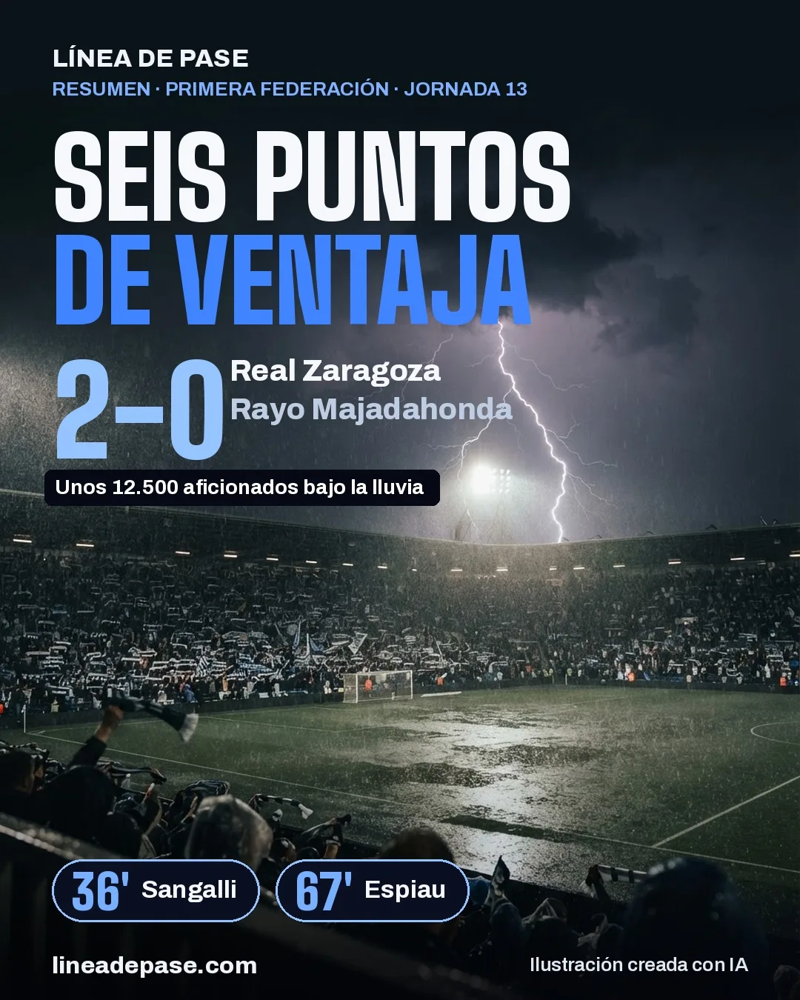

Proyectos / Real Zaragoza 2026/27 / Resumen J13

Resumen · Jornada 13 · 21 de noviembre de 2026
Seis puntos de ventaja
Real Zaragoza 2-0 Rayo Majadahonda, con goles de Sangalli en el 36 y de Espiau en el 67.
Publicado el 21/11/2026 · Revisado el 21/11/2026 · Ángel Marqueta Alonso

El partido
Un partido de lluvia y suplentes
Llovía desde tres horas antes del pitido y la grada lo notó: unos 12.500 espectadores en el Ibercaja Estadio, poco más de media entrada según Aragón Digital. El Rayo Majadahonda salió con tres centrales y el Zaragoza tuvo la pelota, pero ocasiones claras hubo pocas hasta el 1-0.
Llegó en el minuto 36. Rubén Díez puso el pase y Sangalli, desde la línea de fondo, la metió por la escuadra. Poco antes del descanso el Rayo había visto anulado un gol por fuera de juego posicional; en la segunda parte, el Zaragoza vio anulado otro por el mismo motivo.
Lo mejor del segundo tiempo vino del banquillo. Tobajas había entrado en el descanso por Tachi, que se marchó con un esguince de tobillo, según Aragón Digital. En el 62 entraron Cuenca y Espiau, y en el 67 los tres hicieron el 2-0: Tobajas robó y filtró a Cuenca, Cuenca la puso de primeras y Espiau la empujó. Es el mismo patrón que en Jaén, donde tres de los cuatro goles los marcaron suplentes.
En la rueda de prensa, Ibai Gómez dedicó a la afición «un agradecimiento enorme». Con la portería a cero, el Zaragoza queda seis puntos por encima del Villarreal B y siete por encima del Murcia. El Rayo sigue con 7.
Resumen provisional con datos de prensa: Aragón Digital, Sport Aragón, Aragón Play y Eco de Zaragoza. Los minutos de los goles varían un minuto según la fuente: Aragón Digital da el 36 y el 67, y el club y la ficha de la jornada, el 37 y el 68. La ficha completa, con alineaciones, cambios, tarjetas y clasificación, se publicará cuando esos datos estén verificados.